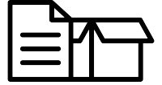
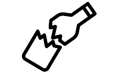
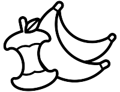

<ion-content [fullscreen]="true" class="page">
  <div class="toolbar">
    <ion-buttons slot="start">
      <ion-back-button
        class="button"
        defaultHref="/"
        (click)="returnPage()"
      ></ion-back-button>
    </ion-buttons>
    <div class="toolbar-content">
      <p class="title">Guide</p>
      <p class="subtitle">Container type</p>
    </div>
  </div>
  <div class="body-container">
    <div class="container--m" id="yellow" (click)="openNewPage('plastic')">
      <p class="text">Yellow Container</p>
      
    </div>
    <div class="container--m" id="blue" (click)="openNewPage('paper')">
      
      <p class="text">Blue Container</p>
    </div>

    <div class="container--m" id="green" (click)="openNewPage('glass')">
      <p class="text">Green Container</p>
      
    </div>
    <div class="container--m" id="grey" (click)="openNewPage('organic')">
      
      <p class="text">Grey Container</p>
    </div>
  </div>
</ion-content>
